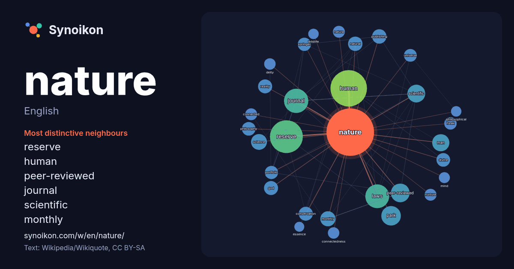

English · popular word
nature
The words found around it in 1653 instances from English Wikipedia, Wikiquote and Hacker News.

Most distinctive neighbours
- reserve 59×
- human 49×
- peer-reviewed 32×
- journal 32×
- scientific 20×
- monthly 19×
- springer 17×
- divine 16×
- portfolio 16×
- publishing 15×
- laws 15×
- reality 15×
- freak 15×
- conservation 14×
- natura 14×
- nurture 14×
- philosophy 13×
- universe 13×
- connectedness 13×
- deity 12×
× = how many times more often than in general English Wikipedia text.
Most frequent neighbours
- human 122
- reserve 99
- journal 54
- laws 52
- album 35
- park 35
- peer-reviewed 32
- scientific 29
- man 27
- centers 26
- published 26
- american 24
- science 23
- study 22
- monthly 21
- research 20
- work 20
- world 20
- natural 19
- publishing 19
In context
- Nature, in the broadest sense, is the physical world or universe. In this general sense nature refers to the laws, elements and phenomena of the physical Wikipedia snippets · Nature
- Nature is a British weekly international scientific journal publishing peer-reviewed research across the natural sciences, including biology, physics, Wikipedia snippets · Nature (journal)
- Nature photography encompasses a wide range of photography taken outdoors and devoted to displaying natural elements such as landscapes, wildlife, plants Wikipedia snippets · Nature photography
- In a Violent Nature is a 2024 Canadian slasher film written and directed by Chris Nash, and starring Ry Barrett, Andrea Pavlovic, and Lauren-Marie Taylor Wikipedia snippets · In a Violent Nature
- Nature therapy, sometimes referred to as ecotherapy, grounding, or earthing, is a practice that describes a broad group of techniques or treatments using Wikipedia snippets · Nature therapy
- On the Nature of Daylight is a contemporary classical composition by German-born British composer Max Richter. Originally released in 2004 as part of his Wikipedia snippets · On the Nature of Daylight
- Force of Nature or Forces of Nature may refer to: Fundamental interaction: gravity, electromagnetism Wikipedia snippets · Force of nature
- (Empedocles) On Nature (Epicurus) On Nature (Heraclitus) On Nature (Melissus) On Nature (Parmenides) On Nature (Philolaus) On Nature (Zeno) Physis, a Greek philosophical Wikipedia snippets · On Nature
More English words
- art
- autumn
- bell
- bread
- bridge
- cat
- city
- climate
- clock
- death
- desert
- dog
- family
- food
- forest
- garden
- god
- gold
- health
- heart
- history
- honey
- horse
- island
- language
- life
- map
- mirror
- money
- mother
- mountain
- power
- rain
- road
- salt
- science
- shadow
- silence
- song
- star
- storm
- summer
- tea
- time
- train
- truth
- water
- winter
- work
Precomputed on 2026-10-09 with default settings (±5 words, medium corpus). The interactive map can refresh it with live data.